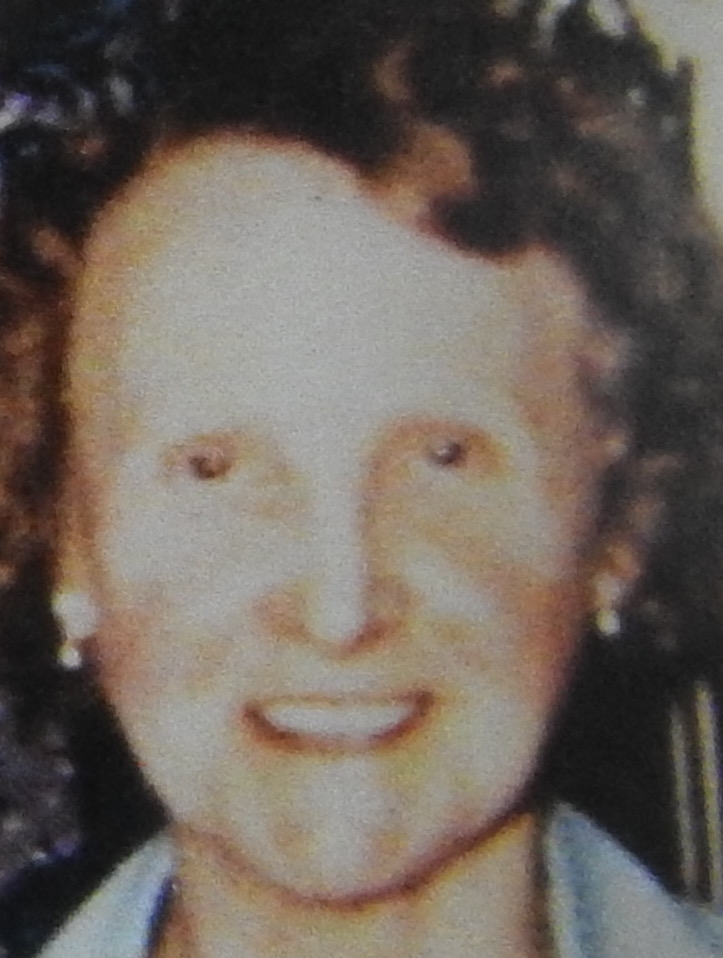
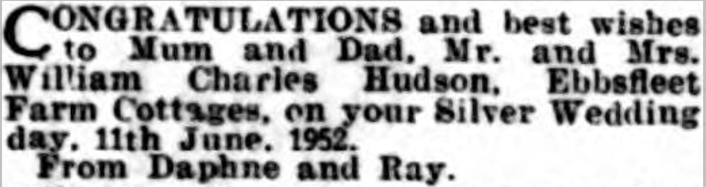
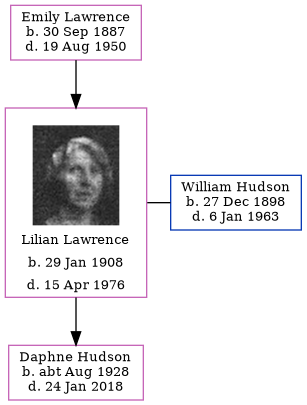

Lilian Florence Hudson (née Lawrence) 1908 - 1976
[ Home ] | [ Calendar ] | [ Surnames Index ] | [ Family History ]The daughter of Emily Lawrence, Lilian Lawrence, (also known as Lillian Cowell) the aunt of <a href="I1.html">Nigel Horne</a>, was born in Minster, Thanet, Kent, England on Jan 29, 1908<span class="citation">1,2,3,4,5,6</span>, was baptized there on Feb 21, 1908 and also married William Hudson (a milkman with whom she had 1 child, Daphne Patricia) there at St Mary the Virgin Church, on Jun 11, 1927<span class="citation">7</span>.</p><p>Lilian spent all of her life in Kent, England. Throughout her life, she lived in several places around the county: on 13 Ashburnham Road, St Lawrence, Thanet, Kent, England on Apr 2, 1911<span class="citation">9</span>; at 7 Pouces Cottages, Minster in Thanet on Jun 19, 1921<span class="citation">2</span>; at Ebbsfleet Farm Cottages, Ebbsfleet on Sep 29, 1939<span class="citation">3</span>; on Ebbsfleet Farm Cottages, Ebbsfleet Lane, Ebbsfleet in 1952; and at 4 Ebbsfleet Farm Cottages, Ebbsfleet Lane, Ebbsfleet in 1963<span class="citation">8</span>. <p>She died on Apr 15, 1976 in Minster<span class="citation">5</span>.
Parents
- Emily Jane was born on Sep 30, 1887
Children
- Daphne Patricia was born c. Aug 1928
Citations
- 1911 England Census Online publication - Provo, UT, USA: Ancestry.com Operations, Inc., 2011.Original data - Census Returns of England and Wales, 1911. Kew, Surrey, England: The National Archives of the UK (TNA), 1911. Data imaged from the National Archives, London, England.
- 1921 Census Of England & Wales - Findmypast (was age 13 and the daughter of the head of the household)
- 1939 Register - Findmypast (was the wife of the head of the household)
- England & Wales deaths 1837-2007 - Findmypast
- England & Wales, Death Index: 1984-2005 Online publication - Provo, UT, USA: The Generations Network, Inc., 2007.Original data - General Register Office. England and Wales Civil Registration Indexes. London, England: General Register Office. © Crown copyright. Published by permission of the Cont
- England & Wales, FreeBMD Birth Index, 1837-1915 Online publication - Provo, UT, USA: The Generations Network, Inc., 2006.Original data - General Register Office. England and Wales Civil Registration Indexes. London, England: General Register Office. © Crown copyright. Published by permission of the Cont
- Kent, Canterbury Archdeaconry marriages 1538-1928 - Findmypast
- From her husband's probate
- 1911 Census for England & Wales - Findmypast (was age 3 and the daughter of the head of the household)
Media
Lillian Lawrence
Lilian Lawrence - 2

East Kent Times and Mail - 7 Jun 1952

1911 England, Wales & Scotland Census Transcription - GBC-1911-RG14-04528-0357-1
1911 England, Wales & Scotland Census Transcription - GBC-1911-RG14-04528-0357-3
England & Wales births 1837-2006 - BMD/B/1908/1/AZ/000367/333
Canterbury Marriages - GBPRS/CANT/M/97045503/1
England & Wales deaths 1837-2007 - BMD/D/1976/2/AZ/000516/029
England & Wales deaths 1837-2007 - BMD/D/1976/2/AZ/000515/132
1939 Register Transcription - TNA-R39-1820-1820H-018-04
England Births & Baptisms 1538-1975 - R_884575875
1921 Census Of England & Wales - GBC/1921/RG15/04430/0279/03
Family Tree
Generated by Ged2Site. Last updated on Jul 20, 2025